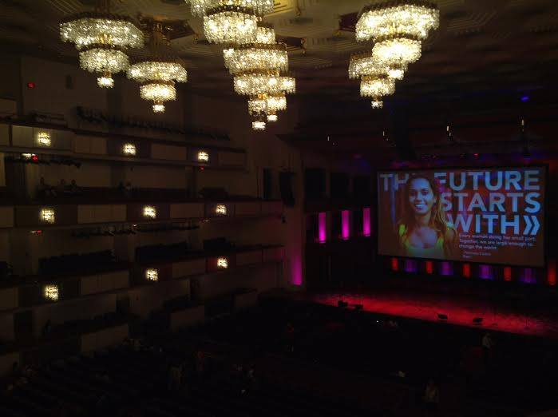

2015 ANNpower Leadership Conference: The Catalyst Behind Kids First
Posted on August 3, 2015 at 11:10 PM
As summer comes to an end, it’s hard not to look back and reflect on all the new friends and memories created. Through the endless images of soccer on the beach, a tent pitched on top of an ant hill, and hauling stacks of books to the coffee shop, one picture stands out the most: a room of fifty rising changemakers surrounded by driven women leaders.
The ANNpower Vital Voices Initiative is a groundbreaking partnership between Ann Taylor and Vital Voices: “We are working together to empower young women from across the U.S. with the leadership skills they need to affect global progress, invest in their communities and begin their journeys as the next generation of leaders” annpower.vitalvoices.org. In April, back when Kids First Project was simply a mission dreamt by Lincoln’s Hope For Homeless Club, I found out I had been selected as one of fifty girls from around the world to attend the leadership conference in Washington D.C. in June as an ANNpower Fellow.
From catching a midnight plane from Portland to wandering around the Detroit airport at four in the morning, I had no idea just how big of an experience I was about to be a part of. From the start, I was greeted by an amazing atmosphere of exuberant mentors and excited fellows.
The conference was absolutely life changing.
I learned years worth of leadership and mentoring lessons in four short days, all thanks to the powerful network of ANNpower. If I were to write my entire experience, it would be more of a novel than a blog post, so I have compiled my top ten memories and lessons learned from the conference to share and hopefully inspire as much as it inspired me..
TOP TEN MEMORIES- Attending the Vital Voices Global Leadership Awards and post awards reception at The John F. Kennedy Center for Performing Arts. We listened to speakers like Bill Clinton, Diane Von Fostenburg, Jan Singer, and Elyse Nelson.
- Meeting all the ANNpower Fellows. $10, 000 grant for own nonprofit? Nation wide app to document encounters with law enforcement? United Nations youth delegate? These powerful ladies were AMAZING and will be lifelong friends.
- Listening to Kay Krill, the CEO of Ann Taylor, Patricia Russo, the Executive Director of Yale’s Women’s Campaign School, and Elyse Nelson, the CEO of Vital Voices, speak about their experiences and to be mentored by them.
- Working with my mentor, Priti Patkar, and learning about her work in India through her work in the red-light districts of Mumbai, India to protect children from human trafficking.
- Taking a picture with and personally talking to Jennifer Morrison, a multi-talented role model in so many ways.
- Learning the Vital Voices Leadership Model and how it can be applied to every single one of our projects - A truly magical formula.
- Visiting the Eisenhower Executive Office Building, adjacent to the White House, to have a roundtable discussion with White House Women Senior Staff.
- Listening to Rosie Rios, the U.S. Treasurer, and how she went from living in a large family in southern California to becoming our country’s treasurer.
- Presenting my elevator pitch to Justin McFarlane, the Senior Vice President of Ann Taylor, and receiving personal feedback from him. Later, we all had the privilege to share our elevator pitches with the entire conference and learn more about each other's passions.
- Shopping event at LOFT! Nobody can complain about having personal stylists, Ann Taylor clothing everywhere, headshots, and Shiseido makeup tutorials with friends for a night.
- You always need to have a driving force. - Elyse Nelson, CEO of Vital Voices (I now wear a bracelet everyday that has “purpose” inscribed on it!)
- Always feel like you own the seat at the table, never doubt yourself. - Rosie Rios (U.S. Treasurer)
- Power pose. - Kathleen Friery (Award-Winning Producer and Independent Communications Trainer)
- Sometimes leadership is a lonely path - Be a good follower and listener as well. - ANNpower Alumni
- See it all in context of the whole story. Every memory and experience all adds up to the anthology that is you. - Jennifer Morrison (actress)
- Seek mentors and maintain relationships through networking. - White House Women Senior Staff at roundtable
- Life is not linear. Take advantage of the twists and turns. - Kay Krill (CEO of Ann Taylor)
- Take into the consideration of the payoffs that comes with taking a risk. - Kay Krill
- Trust your gut, be passionate, stay humble: peacock today, feather duster tomorrow. - Kay Krill
- Support each other. Be patient. Give BACK. - Kay Krill
Because of ANNpower, I was equipped with the knowledge and inspiration needed to establish Kids First Project and register as a 501c3 nonprofit in one short month. Without Patty’s powerful boa, Kay Krill’s ten life lessons, the bravery of all the Vital Voices Global Leadership awardees, my mentor Priti Patkar, all forty nine changemakers, and many others, Kids First Project would not have been possible. I look forward to utilizing the ANNpower Network for years to come and will encourage any girl who looks to change the world to take advantage of this amazing opportunity.
Alisha Zhao Executive Director of Kids First Project